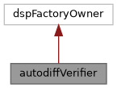

Faust architecture
Loading...
Searching...
No Matches
Public Member Functions
|
List of all members
autodiffVerifier Class Reference
Inheritance diagram for autodiffVerifier:

[
legend
]
Collaboration diagram for autodiffVerifier:
[
legend
]
Public Member Functions
autodiffVerifier
(std::string inputDSPPath, std::string differentiableDSPPath, float epsilon=1e-3f)
void
initialise
()
void
verify
()
The documentation for this class was generated from the following files:
/home/xox/Sync/Fadeli2/pfx/share/faust/autodiff/
autodiffVerifier.h
/home/xox/Sync/Fadeli2/pfx/share/faust/autodiff/
autodiffVerifier.cpp
Generated by
1.9.8